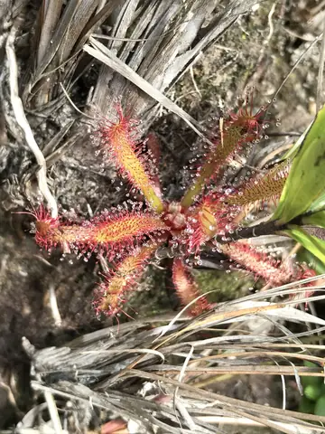
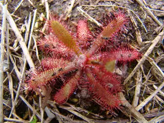
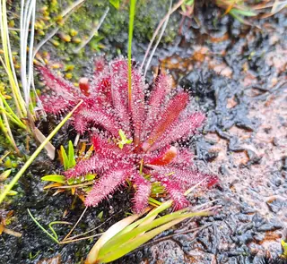

Drosera latifolia



- Genus
- Drosera (sundews), family Droseraceae
- Subgenus
- Drosera
- Section
- Brasiliae
Original description
First described in 1872 as Drosera villosa var. latifolia:
Drosera villosa var. latifolia Eichler, Fl. Bras. 14(2): 395, t. 91, fig. 1. 1872 [1 May 1872]
Read the original page (Biodiversity Heritage Library) · IPNI record
Given its current name and rank in 2014:
Drosera latifolia (Eichler) Gonella & Rivadavia, Phytotaxa 156(1): 21. 2014 [3 Jan 2014] [epublished]
Range given in the IPNI record of that publication: Brazil (Southern America).
How well the identifier knows it
Of 14 validation photos of Drosera latifolia (photos the model never trained on), its top guess was right for 9. It gave a confident answer for 8 of them, and 6 of those were right.
Trained on 46 photos of this species.
Most often mistaken for
- Drosera natalensis (2 photos)
- Drosera tomentosa (1 photo)
- Drosera spatulata (1 photo)
Learn more
- iNaturalist: observations and range map
- Plants of the World Online (Kew): accepted name, distribution and synonyms
- Wikipedia